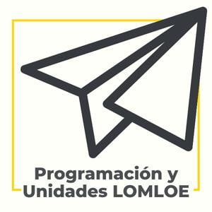

Competencia plurilingüe (CP)
La competencia plurilingüe (CP) es la segunda competencia propuesta por la LOMLOE. Se trata de una nueva competencia clave que nace de la importancia que le da la ley al aspecto cultural en la enseñanza, es decir, saber mediar con hablantes de otras culturas gracias al conocimiento de varios idiomas. Veamos qué nos propone esta competencia y cómo implementarla en nuestra programación didáctica.
¿Qué es la competencia plurilingüe según la LOMLOE?
La idea del plurilingüismo está estrechamente relacionada con la competencia en comunicación y va en la misma línea desde un punto de vista global. Se trata de que el alumno exponga sus ideas, realice comentarios, interactúe o comprenda y lea textos en diferentes lenguas.
¿Cómo explica la LOMLOE qué es la competencia plurilingüe?
La competencia plurilingüe implica utilizar distintas lenguas, orales o signadas, de forma apropiada y eficaz para el aprendizaje y la comunicación. Esta competencia supone reconocer y respetar los perfiles lingüísticos individuales y aprovechar las experiencias propias para desarrollar estrategias que permitan mediar y hacer transferencias entre lenguas, incluidas las clásicas, y, en su caso, mantener y adquirir destrezas en la lengua o lenguas familiares y en las lenguas oficiales. Integra, asimismo, dimensiones históricas e interculturales orientadas a conocer, valorar y respetar la diversidad lingüística y cultural de la sociedad con el objetivo de fomentar la convivencia democrática.
Real Decreto 243/2022, de 5 de abril, por el que se establecen la ordenación y las enseñanzas mínimas del Bachillerato.
Ahora debemos tener en cuenta algunas consideraciones de interés para introducirla en nuestras clases.
En primer lugar, se trata de una competencia que puede resultar compleja de implantar, especialmente en contextos monolingües. Cierto es que tanto ahora como antes es obligatorio estudiar al menos una asignatura de un idioma extranjero, algo que contribuye directamente al desarrollo de la competencia plurilingüe. No obstante, cualquiera podría quedar con la duda de ¿cómo implanto esta competencia en una clase de matemáticas o de tecnología, por ejemplo?
Al final, veremos que no es tan complicado como parece si entendemos cuáles son las claves por las que la LOMLOE destaca esta competencia. Y es que la nueva ley educativa no resalta ante todo un aprendizaje perfecto de un idioma, sino que les da protagonismo a conceptos como la interculturalidad, el valor y el respeto de la diversidad lingüística. La idea principal es considerar que las lenguas están relacionadas entre sí y aprenderlas de forma aislada no va a ser especialmente útil. Lo que se debe hacer de cara a los alumnos es ampliar su repertorio léxico en otros idiomas con el fin de que observen la diversidad de lenguas que existe y se produzca ese intercambio de culturas que destaca la ley.
Si volvemos a la pregunta anterior sobre el plurilingüismo en una clase de matemáticas muchos conocemos palabras como data o limit que podrían ser introducidas a través de gráficas o funciones, enriqueciendo el conocimiento del léxico por parte de los alumnos. O simplemente utilizando simbología x, y, N ya estamos contribuyendo a la competencia plurilingüe, ya que empleamos símbolos universales.

Actividades para trabajar la competencia plurilingüe
Veamos algunos ejemplos de actividades para poner en práctica la competencia plurilingüe:
- Lluvias de ideas sobre lenguas
- Biografías lingüísticas
- Mapas y gráficos sobre lenguas o en otros idiomas
- Informes o presentaciones orales sobre determinados aspectos culturales: fiestas, tradiciones, etc.
- Presentación, análisis y debates sobre noticias universales
- Artículos para un blog en otra lengua o con palabras procedentes de otro idioma
- Chistes sobre otros idiomas o sobre estereotipos
Recuerda que esto es solo una guía y un ejemplo. Modifica, diseña y adapta las actividades según los alumnos, teniendo claro qué tareas a la vez pueden resultar motivadoras para ellos y cumplir con lo propuesto en la ley.
Aprende a programar de acuerdo a la LOMLOE
